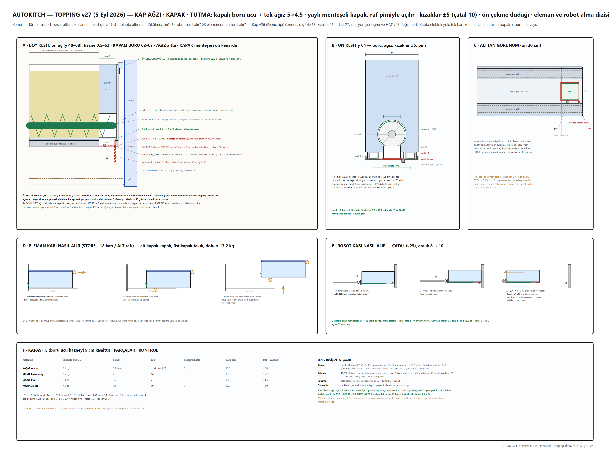
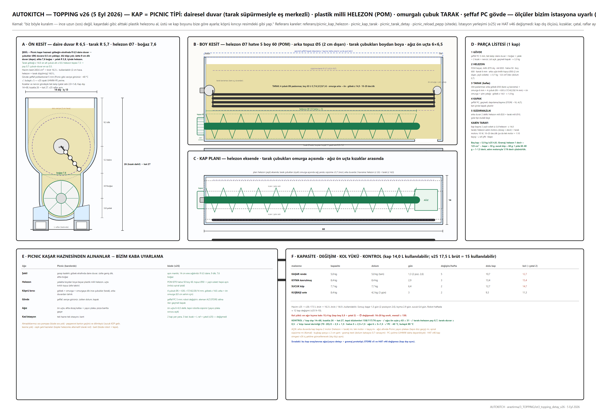
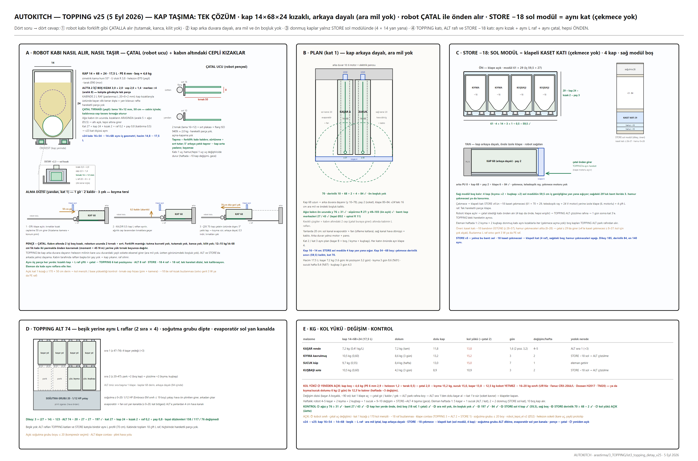
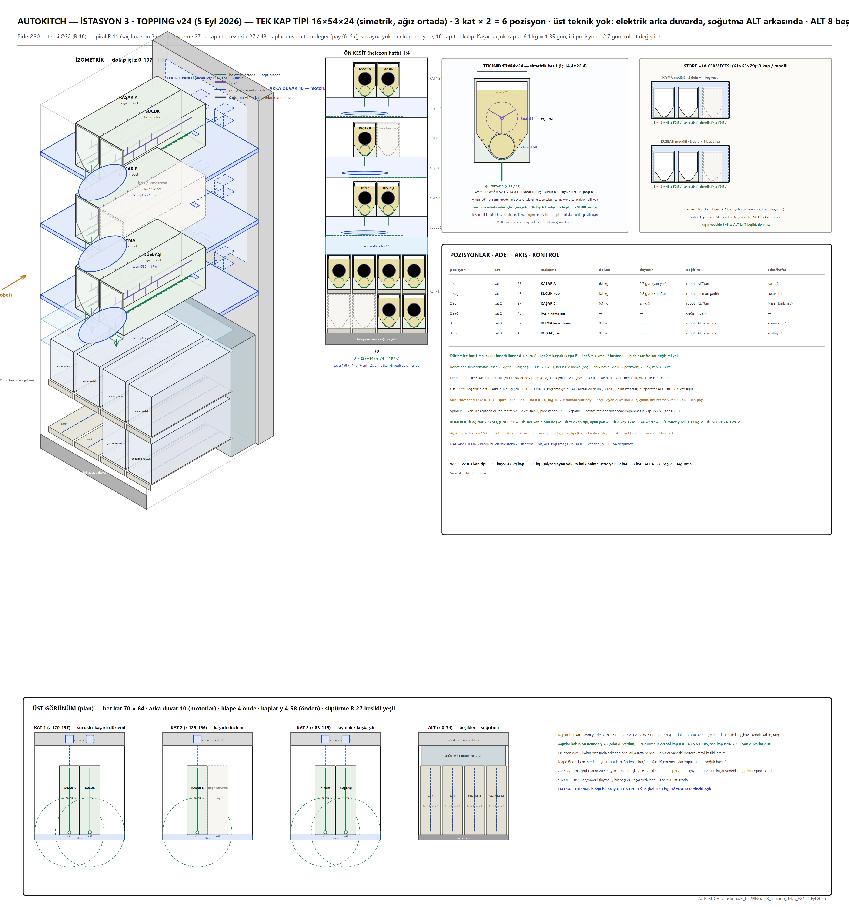
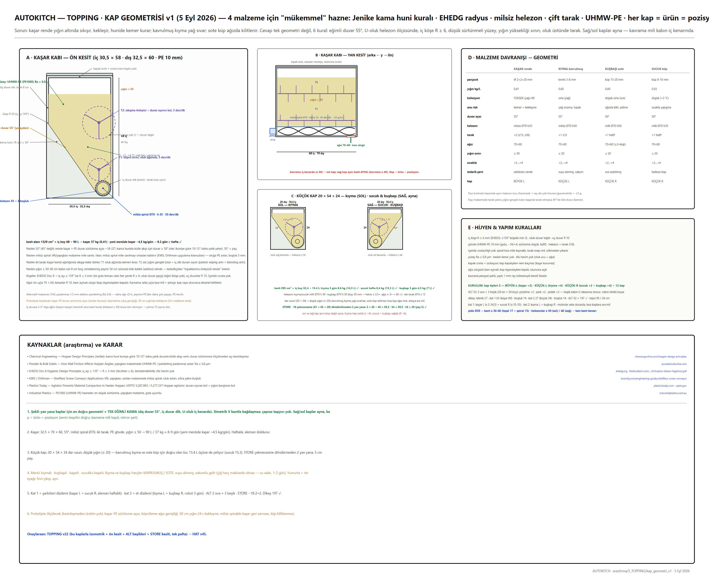
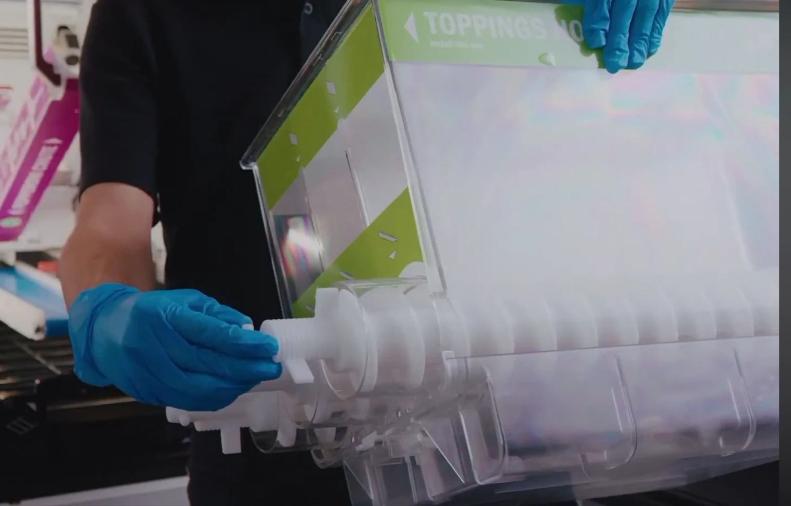
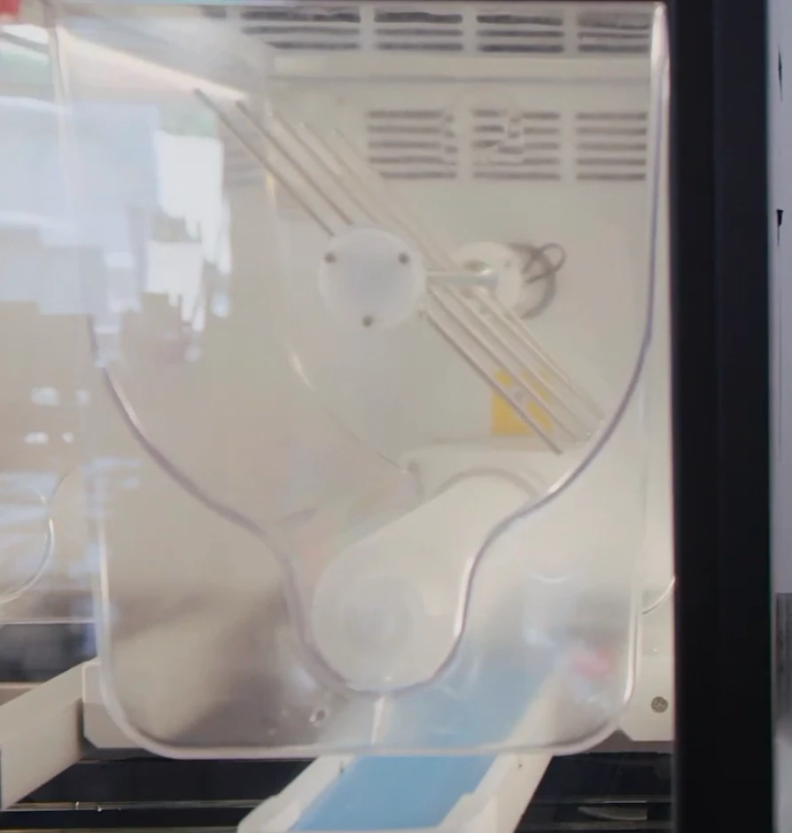
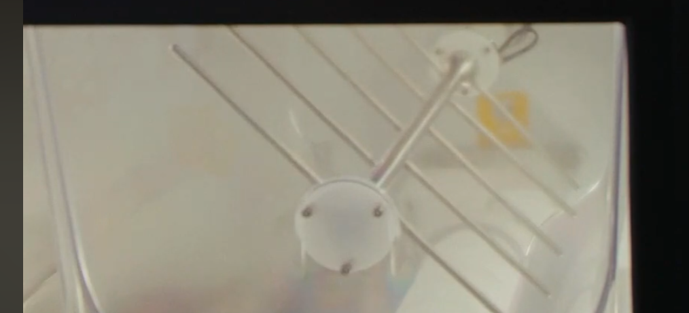
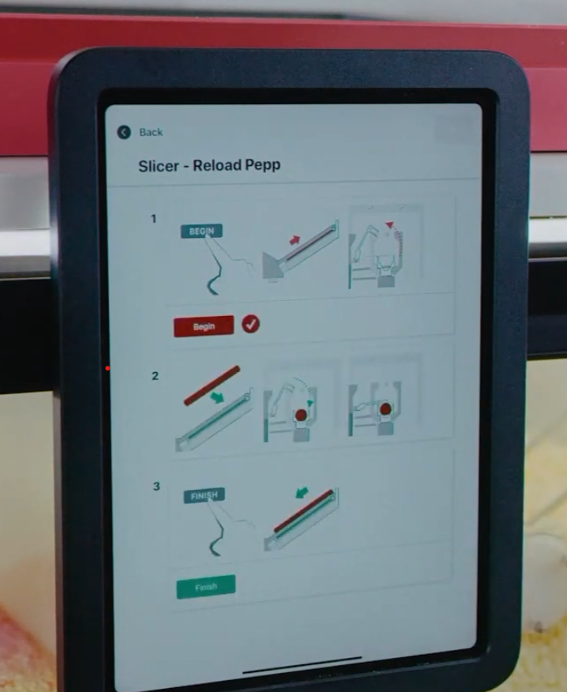

Picnic tipi kaplar: POM helezon + çubuk tarak, şeffaf PC gövde, kapalı boru ucu ve menteşeli kapak. 3 kat × 2 kap, altta 8 kap yedek/çözülme rafı, dipte soğutma.



v25 yerleşim (çatal, L raf, STORE kaset katı)
v24 tek kap tipi
kap geometrisi
Picnic: helezonlu kap
Picnic: tarak
Picnic: tarak detayı
Picnic: yeniden dolum ekranı| Tedarikçi / ürün | Ne | Fiyat / durum |
|---|---|---|
| Picnic Works (ABD, referans) | üstten dolan şeffaf hazne + helezon dozajı + çubuk tarak; firma 2026'da kapandı | model referansı, satın alma yok |
| POM helezon + mil | Ø70 hatve 50 boy 66, tırtıllı topuz | yerli torna/CNC |
| PC gövde | 5 mm polikarbonat, bükme/yapıştırma, menteşeli kapak | yerli |
| Soğutma | 1/12 HP yatay grup + evaporatör (dipte, plint ızgara) | entegratör |
| Forpack · Hipermak · Hipomak | kadehli/porsiyon dozaj ünitesi (mekanizma ailesi) | TR üretici — referans |
| Polimak · Saftek · Denge Proses · TMD | hücre tekeri, non-stick rotor, paslanmaz dozaj | TR üretici — büyütülmüş hâli yaptırılabilir |
Bu gramajda hazır cihaz yok: Chowbotics Sally üretimden kalktı, xPizza Cube B planı. Pilot yolu: küçük ölçekli akış testi (soğuk küp sucuk · kaşar · kavurma) → çalışan mekanizma paslanmaz büyütülmüş hâliyle Denge/TMD sınıfına yaptırılır.
| # | Problem | Durum | Çözüm / not |
|---|---|---|---|
| T1 | Sucuk batonu pide ortasında biterse | ÖNERİ VAR | KÜP sucuk, dilimleme yok |
| T2 | Kaşar rendesi köprülenir | ÖNERİ VAR | tarak + prototip |
| T3 | Kavurma yağlanıp vidaya yapışır | ÖNERİ VAR | soğuk kap + PARÇA kavurma |
| T4 | Gramaj sapması | ÖNERİ VAR | devir sayacı + tartı kalibrasyonu |
| T7 | Kuşbaşı çiğ pişmez | ÖNERİ VAR | sote/kavrulmuş vakumlu |
| T11 | Kaşar topaklanma | ÖNERİ VAR | 2 pozisyon 2,3 gün |
| T12 | Robot kap takası — kobot yükü, kulp | AÇIK | çatal + 16–20 kg kobot |
| v27 | Yayıcı plaka mı spiral süpürme mi · gramaj prototipi (123 cm³/dev) · PC çizilme · kap başına 2 soket mi tek motor + kayış mı | AÇIK | prototip |
| — | Malzeme pide ortasında biterse | ÖNERİ VAR | sipariş başında yeterlilik teyidi — yarım pide hiç oluşmaz; yetersizse pide bekler, yedek kap takılır |
| — | Dozaj boşluğu açık ve soğutulmaz | ÖNERİ VAR | ağızda bekleyen malzeme az; pilotta 1 saat beklemiş doz tartılır |